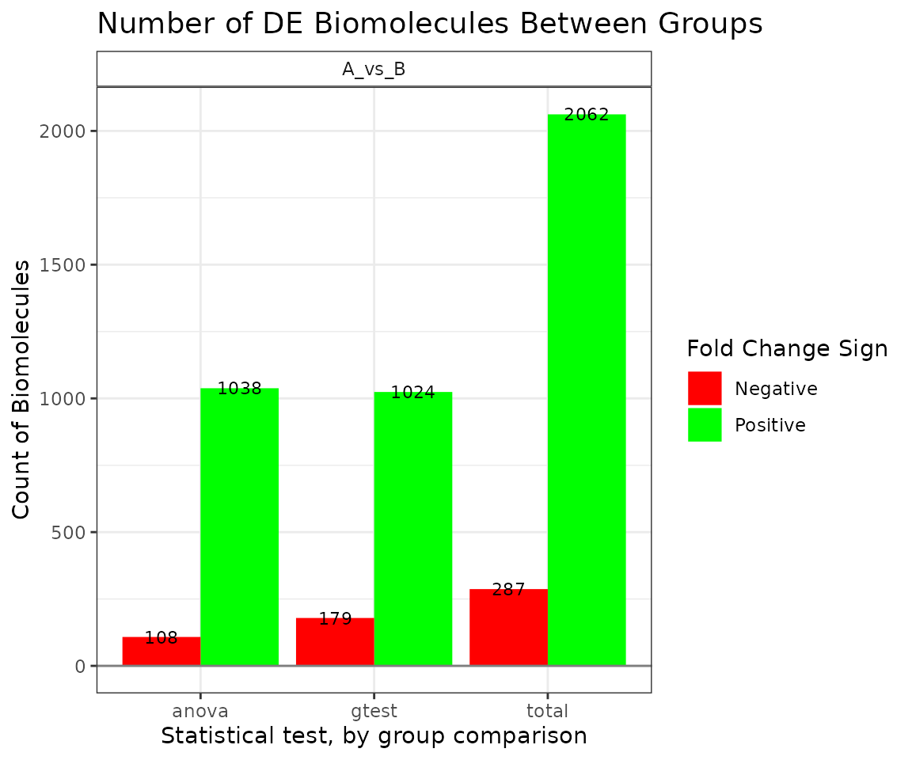

Statistical Analysis with the
pmartR Package
Bryan Stanfill, Kelly Stratton, Lisa Bramer
2024-10-16
Source:vignettes/Statistical_Analysis_with_pmartR.Rmd
Statistical_Analysis_with_pmartR.Rmd
library(pmartR)
library(pmartRdata)
pep_object <- edata_transform(
omicsData = pmartRdata::pep_object,
data_scale = "log2"
)Introduction
This vignette describes the statistical analysis capabilities for
omicsData objects other than seqData. For
details about the statistical methods for seqData objects,
see ?diffexp_seq.
The pmartR package includes functions to assess
qualitative and quantitative differences in abundance data using the
IMD-ANOVA method described in Webb-Robertson et
al. (2010). Our IMD-ANOVA functionality can handle omics datasets
with various experimental designs, including up to two grouping factors
with or without additional covariate information. The data can be paired
or not.
The functionality of the pmartR package will be
illustrated with peptide data available from the pmartRdata
package called pep_object. In a nutshell, the
pep_object object is a list of length three of the class
pepData. The e_data element contains all of
the peptide abundance data, the f_data object contains
sample information, and the e_meta object contains meta
information related to the peptides in the dataset. See
?pmartRdata for more on this data set.
IMD-ANOVA Test for Differential Abundance
The imd_anova() function is used to implement the IMD
test, ANOVA test, or combined IMD-ANOVA test. Using the combined test
simply means that both ANOVA and IMD are used, and results reported for
both tests.
Below, descriptions of ANOVA and IMD are provided, followed by a
description of the output from the imd_anova()
function.
Analysis of Variance
Quantitative tests for differential abundance of pan-omic data are
accomplished using the function test_method = "anova" or
test_method = "combined" arguments, which implement an
analysis of variance (ANOVA) for each biomolecule. Rcpp and
parallel processing are used to speed up computation (Eddelbuettel (2013)). Different ANOVA
implementations are applied depending on the complexity of the supplied
data. For example, if only two groups are supplied then ANOVA reduces to
a two sample
-test
that assumes equal variance for the two groups. Alternatively, if two
groups are present and a covariate correction is required, then a
two-factor ANCOVA is used to detect differences between all combinations
of groups or between main effects as appropriate controlling for
covariates. Details on generalizations to these two approaches are given
in the next two subsections.
One Group
If there is only one grouping factor and that factor has more than two levels, then a one-way ANOVA tests for quantitative differences between the groups. Let represent the biomolecule abundance for observation in group on the log base 2 scale then we assume where represents the mean abundance of group (on the log-scale) and are the error terms that are assumed to be independent and identically distributed (iid) according to the normal distribution with mean and variance . Group comparisons are performed according to 3.1 General linear models in (Bretz, Hothorn, and Westfall (2016)). Under the hood, a linear model of the form is fit, and the design matrix is used to form the appropriate contrast matrix for comparing means. This framework extends to the two factor case as well.
The code below will group the peptide data by Phenotype, which is a
categorical variable with three levels: “Phenotype1”, “Phenotype2”, and
“Phenotype3”. Then the anova_test function fits the model
described above and tests for differential abundance between each pair
of phenotypes for every peptide.
pep_object <- group_designation(
omicsData = pep_object,
main_effects = c("Phenotype")
)
myfilt <- imdanova_filter(omicsData = pep_object)
pep_object <- applyFilt(
filter_object = myfilt,
omicsData = pep_object,
min_nonmiss_anova = 2,
min_nonmiss_gtest = 3
)
all_pairwise_results <- imd_anova(
omicsData = pep_object,
test_method = "anova"
)The function imd_anova function returns a data frame
containing:
The number of observed values in each group in the columns called
Count_iwhereiis replaced by the group name supplied as an attribute of theomicsDataargument,The least squares means for each group in the columns called
Mean_iwhereiis replaced by the group name supplied as an attribute of theomicsDataargument,The -values for each comparison in the columns called
P_value_A_(“A” for ANOVA)The (log2) fold change for each comparison,
An indicator for significance for each comparison in the columns called
Flag_A_(“A” for ANOVA) that is a or 0 depending on whether that fold change was or was not statistically significant from zero, respectively, according to the -values and the specified -value threshold set by thepval_threshargument toimd_anova. A value of implies the “control” or “reference” group is significantly under expressed compared to the test group, and the converse is true for .
The
-values
associated with each group comparison can be adjusted for multiple
comparisons using the pval_adjust_a_multcomp argument to
imd_anova. A detailed look at the available
-value
adjustment methods and when they should be applied are discussed later
in this vignette, but the use of the Tukey multiple comparison method is
illustrated in the following.
all_pairwise_results_adjusted <- imd_anova(
omicsData = pep_object,
test_method = "anova",
pval_adjust_a_multcomp = "Tukey"
)By default, all pairwise comparisons are made. Custom comparisons can
by defined by passing a data.frame to the
comparisons argument with column names “Test” and
“Control”. Now, group “Phenotype1” is treated as the control group and
the remaining groups are compared to it.
one_vs_all <- data.frame(
Control = rep("Phenotype1", 2),
Test = c("Phenotype2", "Phenotype3")
)
one_vs_all_results <- imd_anova(
omicsData = pep_object,
test_method = "anova",
comparisons = one_vs_all
)If the grouping variable has only two levels,
,
then a Welch’s
-test
is performed instead of an ANOVA. That is, the model defined in equation
() is still fit, but the two groups of the grouping factor are allowed
to have different variances. In particular, the error terms
are assumed to be independently distributed according to the normal
distribution with mean
and variance
.
To determine if the biomolecules are differentially expressed,
-values
are derived from a
-distribution
with degrees of freedom approximated by the Satterthwaite equation. The
value for Variance, which is not a pooled variance
estimate, scaled by the Satterthwaite approximate degrees of freedom. To
illustrate this the data are grouped by “SecondPhenotype”, which has two
values, then fit with ANOVA.
pep_object <- group_designation(
omicsData = pep_object,
main_effects = c("SecondPhenotype")
)
all_pairwise_results <- imd_anova(
omicsData = pep_object,
test_method = "anova"
)When this model is fit, it is imperative the researcher check the assumptions of the model. In particular for the case, the residuals are assumed to be independent, normally distributed and have a common variance across groups. The appropriateness of this assumption can be assessed using quantile-quantile plots and comparisons of each group’s variance.
Two Groups
Next we consider the case where there are two grouping factors again in the context of biomolecule abundance. Let represent the biomolecule abundance for observation in group and group on the log base 2 scale then we assume where represents the mean abundance for an observation in th first group and th second group which have marginal means and , respectively. Finally, is the interaction effect of group , and are the error terms that are assumed to be iid according to the normal distribution with mean and variance .
For each biomolecule, the test_method = "anova" argument
automatically tests if the
effect is statistically significant from zero using a full and reduced
model
-test.
That is, in addition to the model above, the reduced model
is also fit and the test
statistic
is computed where
and
are the mean square error and degrees of freedom for the full (F; ) or
reduced (R; ) model, respectively. A
-value
is computed based on
as
where
is compared to an
distribution with degrees of freedom
and
.
If
then there is significant evidence to reject the null hypothesis that
the reduced model is adequate and the full model is used to test for
group differences. Conversely, if
then there is not enough evidence to reject the null hypothesis and the
reduced model is used. Group comparisons are computed in the same manner
as the one-factor case, following 3.1 General linear models in
(Bretz, Hothorn, and Westfall (2016)).
Regardless of whether the full or reduced model is used, both assume that the residuals are independent and normally distributed with a common variance for all groups. These assumptions must be checked before the results of the model are used to assess differential abundance.
Covariate Adjustment
If, in addition to a single grouping factor, there are covariates to
account for when testing for differential abundance then a linear model
of the form
is fit to the transformed
abundance data
where
is the dummy-encoded design matrix for the main effects,
is the design matrix for any covariates,
and
are the parameters to be estimated for the main effects and covariates,
and
is the error term. Note that
allows for the one factor model, as well as the full and reduced forms
of the two factor model. We estimate the least squares means using the
estimated coefficients
and
.
Specifically, when computing the the least squares mean for a particular
combination of main effect levels, we consider the predicted value of
the fitted model at the main effect levels in question, the mean value
of continuous covariates, and averaged over all levels of categorical
covariates. This is equivalent to the treatment in the
emmeans package (Lenth
(2023)).
Paired Data
The comparison of samples at two points in time from the same
individual (e.g., a before and after state) is common in omics
experiments and referred to as “paired data.” To enable analysis of
paired data in pmartR, we have implemented a method for
specifying pair information and added appropriate code to any
pmartR functions impacted by the use of paired data.
If data are paired, this should be specified using the
group_designation function. Users can also designate which
member of a pair is the “control” or “reference.”
ANOVA tests can be performed on paired data with or without any main effects or covariates.
The robust Mahalanobis distance (rMd) filter for sample outlier detection has been updated to remove all parts of a pair when at least one of the individuals in the pair does not pass the specified p-value threshold. Filters for biomolecules have also been updated to consider the pair as opposed to each individual member of the pair.
# add fake pair info to f_data using SecondPhenotype
pep_object$f_data$Pairing <- pep_object$f_data$SecondPhenotype
pep_object$f_data$Pair_ID <- c(rep(1:4, 2), rep(5:8, 2), rep(9:12, 2))
mypaired <- group_designation(
omicsData = pep_object,
pair_group = "Pairing",
pair_id = "Pair_ID",
pair_denom = "B"
)
myfilt <- imdanova_filter(omicsData = mypaired)
mypaired <- applyFilt(
filter_object = myfilt,
omicsData = mypaired,
min_nonmiss_anova = 2,
min_nonmiss_gtest = 3
)
paired_stats <- imd_anova(
omicsData = mypaired,
test_method = "anova"
)Test for Independence of Missing Data
In the event that there aren’t enough observed values to test for a quantitative difference in abundance between groups, one could still test for a qualitative difference in groups using the independence of missing data (IMD) test. This is often the case for proteomics data where peptides or proteins could have missing data for one of several reasons. The idea is to assess if there are more missing data in one group compared to another. If there are an adequate number of non-missing data available, then the test of independence can be used. This assumption often fails, however, so a modified version of the test, called the -test, should be used.
The test statistic associated with the IMD test for each biomolecule is given by where and are the observed and expected number of non-missing values for group , respectively. The quantities are similarly defined for the missing (absent) values. Further, the expected number of non-missing values is where is the number of samples associated with group , is the total number of samples and is the number of samples with this biomolecule missing.
The function test_method = "gtest" or
test_method = "combined" argument specification will
perform the test for missing data. The results object returned is the
same as described above, for ANOVA, except an “_G” is used to denote
columns specific to the g-test.
The number of observed values in each group in the columns called
Count_iwhereiis replaced by the group name supplied as an attribute of theomicsDataargument,The best linear unbiased estimators of in the columns called
Mean_iwhereiis replaced by the group name supplied as an attribute of theomicsDataargument,The -values for each comparison in the columns called
P_value_G_(“G” g-test)The (log2) fold change for each comparison,
An indicator for significance for each comparison in the columns called
Flag_G_(“G” g-test) that is a or 0 depending on whether the -values were significant or not. In this case, a value of implies the “control” or “reference” group had fewer observations than the test group, and the converse is true for .
The
-values
associated with each group comparison can be adjusted for multiple
comparisons using the pval_adjust_g_multcomp argument to
imd_anova.
Covariate Adjustment
Covariates can also be accounted for in the g-test. This is
accomplished internally by passing their terms to the model
specification in glm, which is used to compute the IMD
test.
mypep_covariates <- group_designation(pep_object, main_effects = "Phenotype", covariates = "Characteristic")
imd_covariates <- imd_anova(
omicsData = mypep_covariates,
test_method = "gtest"
)Paired Data
The g-test in the imd-ANOVA test can now be run on paired data and requires a “main effects” designation, unlike the quantitative test (ANOVA).
# add fake pair info to f_data using SecondPhenotype
mypaired <- group_designation(
omicsData = pep_object,
main_effects = "Phenotype",
pair_group = "Pairing",
pair_id = "Pair_ID",
pair_denom = "B"
)
myfilt <- imdanova_filter(omicsData = mypaired)
mypaired <- applyFilt(
filter_object = myfilt,
omicsData = mypaired,
min_nonmiss_anova = 2,
min_nonmiss_gtest = 3
)
paired_stats <- imd_anova(
omicsData = mypaired,
test_method = "gtest"
)Output
The imd_anova() function returns an object of class
statRes that is a data frame with some attributes. The data
frame includes:
- Biomolecule name
- Counts of observed values per main effect group
- Least squares means of observed values per main effect group
- log2 fold changes for each comparison
- p-values for each comparison and test
- Flags indicating significance
The statRes object also consists of several attributes
which specify the methods used to arrive at the results. This way, the
results object is self-contained and can be passed to other functions
for further analysis with ease. In particular, the attributes are
-
group_DF-data.framedefining which samples are associated with which groups -
comparisons-data.framedefining the comparisons that were tested -
number_significant-data.framegiving the number of significant biomolecules (up and down) for each comparison -
statistical_test- character string giving the statistical test(s) run -
adjustment_method_aandadjustment_method_g- character string giving the adjustment for multiple comparisons that was used; NA if none was used -
pval_thresh- the numeric value that was an input toanova_test -
which_X- For two factor models, a vector of zeros and ones indicating whether the corresponding biomolecule had the full model with interaction terms fit (ones) or the reduced model without interaction terms fit (zeros). For one factor models, this is a vector of zeros.
Several methods are defined for objects of class statRes
including summary, print and
plot, which are discussed in more depth in the next
section.
Methods for Results Objects
Special functions are available for objects of class
statRes including print, summary
and plot. Due to the typical size the statRes
objects, only the head of each element in a statRes object
is printed along with the summarized attributes; use
print.default to see the full object. The
summary functions prints the type of test that was run, any
adjustments that were made, the
-value
threshold used to define significance and a table that summarizes the
number of significant biomolecules (up or down) for each comparison. See
below for an illustration.
The plot function can be used to produce any subset of
the following four plots specified by the plot_type
argument. If not plot_type is supplied, then all four are
created, otherwise on the subset specified is produced.
-
"bar"- shows the number of significant biomolecules grouped by comparisons -
"volcano"- a plot of the -value by the fold-change estimate differentiated by test and faceted by comparison -
"heatmap"- illustrates the fold changes for the statistically significant biomolecules (only available if more than one comparison is done)
## Type of test: combined
##
## Multiple comparison adjustment ANOVA:
##
## Multiple comparison adjustment G-test:
##
## p-value threshold: 0.05
##
## Number of significant biomolecules by comparison. Columns specify fold change direction and type of test:
##
## Comparison Total:Positive Total:Negative Positive:ANOVA Negative:ANOVA
## 1 A_vs_B 2062 287 1038 108
## Positive:G-test Negative:G-test
## 1 1024 179
print(stat_results)## statRes
## Peptide Count_A Count_B Mean_A Mean_B
## 1 AAAAAAAAAAGAAGGR 4 6 26.82222 26.19385
## 2 AAAAAAALQAK 3 3 25.76461 26.51143
## 3 AAAAAEQQQFYLLLGNLLSPDNVVR 8 8 25.02951 24.83093
## 4 AAAAAGTATSQR 10 11 25.35116 25.37603
## 5 ---- ---- ---- ---- ----
## 18103 YTIIIPENLKPQMK 5 1 26.16265 26.18524
## 18104 YTQELTLK 3 2 25.07080 24.42717
## 18105 YTYSEWHSFTQPR 2 2 25.21807 25.38213
## 18106 YVYDSAFHPDTGEK 3 2 25.07202 24.09574
plot(stat_results, stacked=FALSE)
plot(stat_results, plot_type = "volcano")
-value Adjustment Methods
If several comparisons are being made it is a good idea to adjust the -values in order to control the false positive rate. Currently -value adjustments are made at the biomolecule level (i.e., adjustments are made for the number of groups being compared). The available -value adjustments are described in the following table. The “Appropriate Comparison” column refers to which correction method is preferred based on the type of comparisons being made, i.e, all pairwise or case-to-control. Check marks in the “ANOVA” and “IMD” columns indicate if that correction method is appropriate for ANOVA or IMD comparisons.
| Method Name | Appropriate Comparison | ANOVA | IMD |
|---|---|---|---|
| Bonferroni | Both | ||
| Dunnett | Case-vs-control | ||
| Holm | Both | ||
| Tukey | All pairwise |
False Discovery Rate Methods
To perform false discovery rate (FDR) control, we can pass the
argument pval_adjust_a_fdr or
pval_adjust_g_fdr for the anova and IMD tests respectively.
Options are “bonferroni”, “BH”, “BY”, and “fdr”, see
?p.adjust.
stat_results <- imd_anova(
omicsData = pep_object,
test_method = "combined",
pval_adjust_a_fdr = "BH",
pval_adjust_g_fdr = "BH"
)